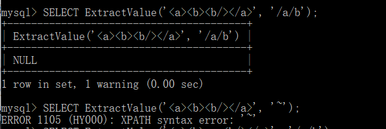
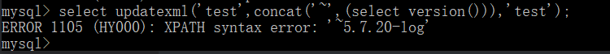

练习sql注入时，get新技能sql报错注入，做下笔记。
- 报错注入：extractvalue、updatexml报错原理
MySQL 5.1.5版本中添加了对XML文档进行查询和修改的两个函数：extractvalue、updatexml
| 名称 | 描述 |
|---|---|
ExtractValue() |
使用XPath表示法从XML字符串中提取值 |
UpdateXML() |
返回替换的XML片段 |
通过这两个函数可以完成报错注入
- extractvalue函数
ExtractValue(xml_frag, xpath_expr)
ExtractValue()接受两个字符串参数，一个XML标记片段 xml_frag和一个XPath表达式 xpath_expr（也称为 定位器）; 它返回CDATA第一个文本节点的text()，该节点是XPath表达式匹配的元素的子元素。
第一个参数可以传入目标xml文档，第二个参数是用Xpath路径法表示的查找路径
例如：SELECT ExtractValue('<a><b></b></a>', '/a/b'); 就是寻找前一段xml文档内容中的a节点下的b节点，这里如果Xpath格式语法书写错误的话，就会报错。这里就是利用这个特性来获得我们想要知道的内容。

（这里我们是为了学习报错注入，所以不需要太详细的知道该函数具体原理）
利用concat函数将想要获得的数据库内容拼接到第二个参数中，报错时作为内容输出。
- updatexml函数
UpdateXML(xml_target, xpath_expr, new_xml)
xml_target：需要操作的xml片段
xpath_expr： 需要更新的xml路径(Xpath格式)
new_xml： 更新后的内容
此函数用来更新选定XML片段的内容，将XML标记的给定片段的单个部分替换为 xml_target新的XML片段 new_xml，然后返回更改的XML。xml_target替换的部分与xpath_expr用户提供的XPath表达式匹配。
如果xpath_expr没有找到表达式匹配 ，或者找到多个匹配项，则该函数返回原始 xml_targetXML片段。所有三个参数都应该是字符串。使用方式如下：
1 | mysql> SELECT |
这里和上面的extractvalue函数一样，当Xpath路径语法错误时，就会报错，报错内容含有错误的路径内容：
